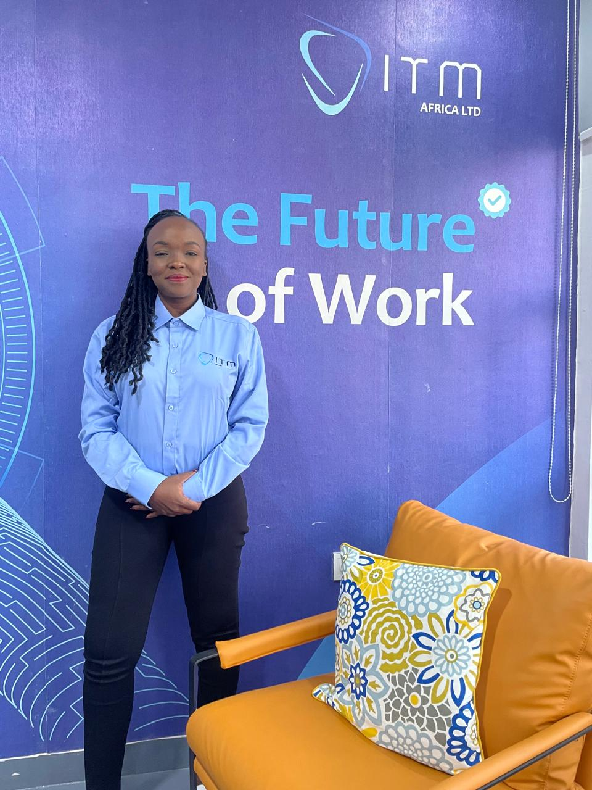
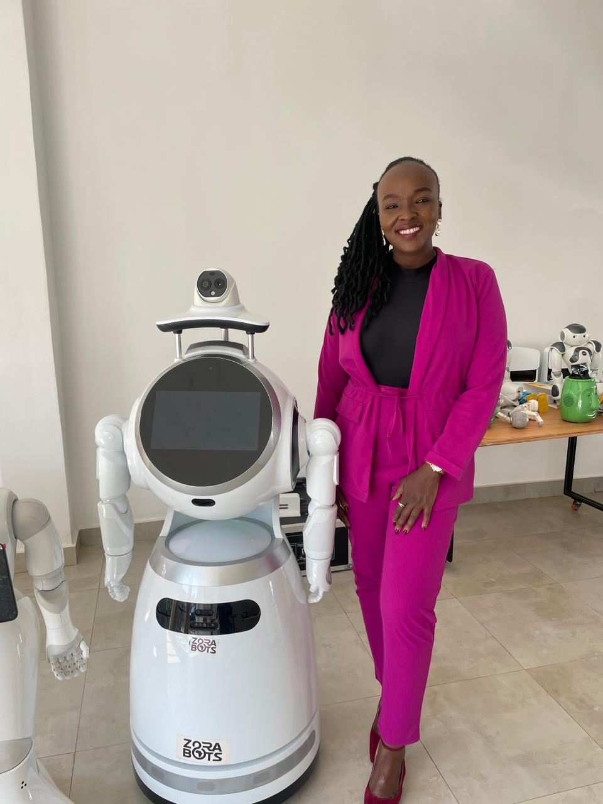
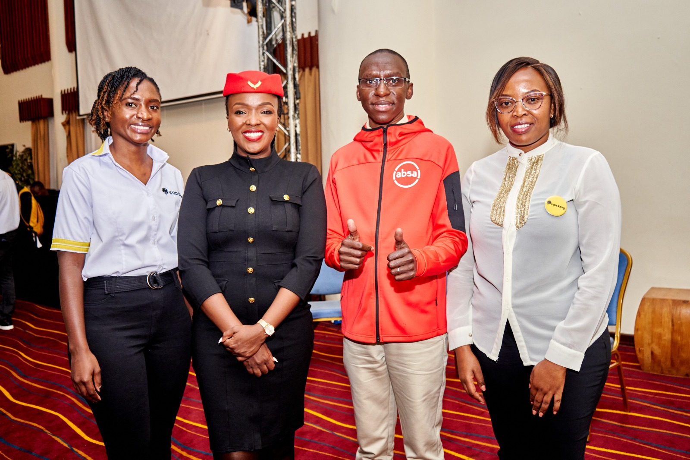

Selected Events
Where Hanisa Has Taken the Stage




What We Offer
From strategic advisory retainers to keynote stages and US sales growth — explore how the LynchPin partners with organizations at every stage of their journey.
Growth Strategy & Market Expansion
Choose the level of commercial growth partnership that matches your organization's stage, from focused strategy to embedded executive support.
For startups & early-stage teams
Ideal for organizations laying the groundwork for sustainable growth and needing clear commercial direction.
For scaling organizations & NGOs
A deeper partnership for organizations ready to sharpen market execution and build high-value relationships.
For corporations & institutions
An embedded executive growth partnership for organizations pursuing expansion, revenue acceleration, and commercial scale.
Selected Events



Growth Consultancy
Beyond Africa-focused advisory, Hanisa partners directly with US-based companies to build predictable, scalable revenue engines.
Building targeted outbound and inbound lead pipelines using data-driven prospecting, ICP definition, and multi-channel outreach strategies.
Architecting end-to-end sales funnels — from awareness to closed-won — with clear conversion touchpoints and messaging frameworks.
Identifying and cultivating strategic partnerships and channel relationships that accelerate market penetration.
Optimizing CRM workflows, sales processes, and reporting systems to improve close rates and pipeline visibility.
Crafting launch strategies for new products, services, or markets — with a focus on rapid, sustainable traction.
Training and coaching sales teams on consultative selling, objection handling, and pipeline management best practices.
From New York to Washington DC, Baltimore to Delaware — Hanisa works hands-on with founders and sales leaders to build systems that generate consistent, qualified pipeline.
Whether it's a consulting engagement, a keynote booking, or a growth sprint — let's talk.
Get in Touch